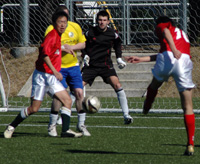

OLD STORIES - February 2009
Panthers Maintain Form
 |
|
Masa goes on a mazy run for Panthers. |
Setagaya Koen, Saturday 28th February
Rain, rain, more rain. That’s what I expected going out on Saturday morning to setagaya-koen’s beautiful pitch. Low and behold I was greater with a recent stranger to Tokyo, SUN! Just the walk to the pitch was great so I had high expectations for the game. more ...
LR.
Sala Pummel France
Fukuda Denshi, Sunday 22nd February
Fill a bag with poo and punch it!!! Just like last year, that's the only way to describe another explosive encounter between Sala and France. So explosive, in fact, that Napolean and Nelson would have, respectively, found their diminutive stature and lack of appendages too inadequate to take part in this tumultuous battle. And, what a stonking score to go with it. 7-1 to the Sala, with two players bagging hatricks, no less than 5 yellow cards!! more ...
ST.
How to Climb a Table on One Leg
|
Naoki Ogasawara volleys in for Albion. |
OiFuto, Saturday 21st February
Even though it involved a team that specializes in against-the-odds victories, this game would have had William Hill and Paddy Power scratching each other's heads in disbelief. Mauritzio had a 14-man squad that looked much more capable than their lowly league position would suggest. The Albion Old Boys played almost the whole game with ten men, three of whom would have been substituted for injuries had the option been available. Nevertheless it was the limping veterans who were on the right end of a 7-3 scoreline that takes them firmly into nosebleed territory at the top end of Division 2. more ...
TC.
 |
|
Zuhair celebrates after scoring Lions 2nd. |
Lions’ Appetite for Geckoes
OiFuto, Saturday 21st February
A roller coaster season for Lions saw them field their strongest squad for the first time this season, despite the absence of the influential captain Somi for the third game in a row. With the bench holding the likes of Ahmed Gaafar, Omar, and last year’s Lions top scorer Ken Hersche, surely the Geckoes were in for a match.
Lions should have won the first game against Geckoes, but lack of finishing made them pay dearly as Geckoes won the first meeting 3-1. more ...
HS.
 |
|
Yan Vermeullen misses a tackle for DEFC |
By the Skin of the Oranje
OiFuto, Saturday 21st February
A well fought draw between the n.2 and n.3 teams of division Two entertained the two spectators at Oi Futo dirt this afternoon.
Back in September, the Dutch Embassy easily disposed of a good Zion team thanks to their swift strikers, but this time the Zion boys put a much better performance and showed significant skill with the ball. more ...
LVL.
Sala Floored by Late Tyson KO
YC&AC, Sunday 15th February
It's that time again, doomseekers and sadists! When Scorchio pens another tale of what could have been and what nearly was for poor old Sala FC. A 3-2 defeat to YCAC was the bottom line this time. more ...
ST.
We're Gonna Win the League!!
Hachioji Park, Sunday 15th February
Nine hundred and ninety minutes into the season and the monkey has been well and truly yanked from our backs. That's right! The Embassy have a point! Watch out Hibs – our title charge is back on!! more ...
RH.
Oh Sh*te! Three More Points!
OiFuto, Saturday 14th February
Talk about going against your best interests. Like George Best scratching the stitches above his freshly-transplanted liver with one hand while pouring himself a pint of vodka with the other, the Albion Old Boys just can't seem to keep their spirit bottled up, as even the knowledge that a victory would place them them firmly in the unwelcome territory of the Division Two promotion battle couldn't stop them from putting in another committed display to overcome the BFC Vagabonds with a hard-earned but well-deserved 4-2 win. more ...
TC.
|
Pete McGill fires in from 20yds as Celts come back from 2 down to hold BFC 2-2. |
Celts Cook BFC's Goose
Setagaya Koen, Sunday 15th February
BFC's chances of a third successive TML title took a battering when they blew a two-goal lead against the Kanto Celts. The hankies were out at the final whistle. more ...
AH.
Clash Give it Some Moore
Misato, Sunday 15th February
Zion and the Clash fought out an eventful one-all draw in the early kick-off at Misato on Sunday.
Perhaps unfortunately, this game will be remembered for more than just the passing football, hard-but-clean competitiveness and a result which probably just about satisfied both teams. Fortunately, it will definitely be remembered. more ...
AW.
Battling Sala Outclassed by BFC
YC&AC, Sunday 8th February
Well, the headline says it all. Sala fought hard and battled admirably, but in the end, were outplayed by a classy intelligent footballing team and last year's deserved champions. A typical laser beam shot from Carlos Aranda, a header from BFC new guy, Mike, and two poachers goals from John Day, proved more than enough for BFC to take the points. more ...
ST.
The Fall of the Romen Empire
|
Substitute George is put on 'Dog duty' |
Setagaya Koen, Saturday 7th February
It is said that Nero fiddled while Rome burned, that Caligula had his wife humped by a horse as he stared madness in the face. Panthers Captain, Romen the Ruthless, seems to have some aristocratic lineage from the Pallatine, nonchalantly fiddling with his dog as the midfield crumbled; the dream of 3 points with it. more ...
KG.
Anyone Got a 'Four-Sleeved' Shirt?
YC&AC, Sunday 8th February
Never mind that BFC blitzed Sala 4-0 to keep their hopes of a third straight TML title alive, the biggest question on the night was if there was a four-sleeved shirt in the kit bag. more ...
DC.
A Bad Case of Wind
YC&AC, Sunday 1st February
With a collective age of around half a millennium, it's understandable that over the years the Albion Old Boys have picked up more than their share of bad footballing habits, some of which, like regularly bringing a chocolate-coloured toy poodle to watch you play, are far too embarrassing to even mention here (so Karl Twohig can rest assured that his secret is safe with us). more ...
TC.
|  |
|
Shane were sent to their first defeat of the season by a very skillful El Diego |
Raffa's Brace Helps Clash Revival.
YC&AC, Sunday 1st February
At YCAC the Clash came back from two-nil down at halftime to beat Jetro 3-2.
This game was perhaps less team versus team over two halves, than each team taking a turn to play the weather for a half. With an incredibly strong and cold wind blowing lengthways down the pitch from the club house end of the ground, the team with their backs to the wind were always going to find the going considerably easier. more ...
AW.